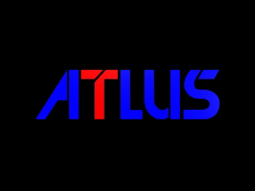
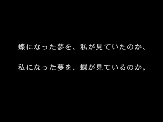

オープンソース PlayStation 1 研究
PSXRecompStudio
PS1バイナリ解析、MIPS R3000Aの検証、静的再コンパイルを研究するオープンソースプロジェクトです。
現在できること：限定的な再コンパイル・インタープリタ比較とPS-X EXE/CHDの解析。
まだできないこと：市販ゲーム全体のAOT再コンパイルや、遊べるネイティブ移植。
最新の成果：OpenBIOSインタープリタでPersonaのオープニング画像を確認
OpenBIOSを用いたインタープリタ経路で『女神異聞録ペルソナ』のオープニング冒頭を表示できました。ATLUSロゴと「胡蝶の夢」に関する文章をVBlank単位で確認しています。


達成範囲：実ゲームの描画進行を確認しましたが、タイトル画面到達、ゲーム全体のAOT再コンパイル、操作可能性は未確認です。証拠・実装（PR #754）をご覧ください。画像は互換性研究の限定的な資料であり、本プロジェクトはATLUSと無関係です。権利関係はLegalをご覧ください。
PSXRecompStudioとは？
合法的に用意したPS-X EXEや対応CHDを解析し、MIPS R3000A命令、制御フロー、BIOS呼び出し、再コンパイル可能範囲を検証する研究基盤です。C#/.NETの解析・アプリケーション層と、C++/Rust混在のNative Coreを安定したC ABIで接続しています。
現在できること
- PS-X EXEと対応CHDの解析、ISO 9660 / SYSTEM.CNF / boot EXEの解決。
- R3000A / MIPS Iの命令、Delay Slot、例外、割り込み、メモリ挙動の検証。
- 合成入力と実ROM由来関数を使った静的再コンパイル、差分検証、coverage計測。
psxrecomp recompile/psxrecomp runによるheadless CLI実行。- BIOS HLE、Interrupt/Timer/DMA/Memory、SIO0/SPU、部分的GPU/FrameSnapshotなどのRuntime基盤。
まだ未完成の部分
- 市販PS1タイトル全体のend-to-end静的再コンパイル。
- GPUのproduction実行経路への完全統合、DMA2、GPU IRQ1、追加描画機能。
- SPU音声生成、CD-ROM、MDEC、GTEなどの完全なハードウェア挙動。
- 実タイトルに必要なBIOS HLE coverageの拡大。
詳しく見る
興味のあるテーマから読み進められます。各カードをクリックすると詳細ページに移動します。